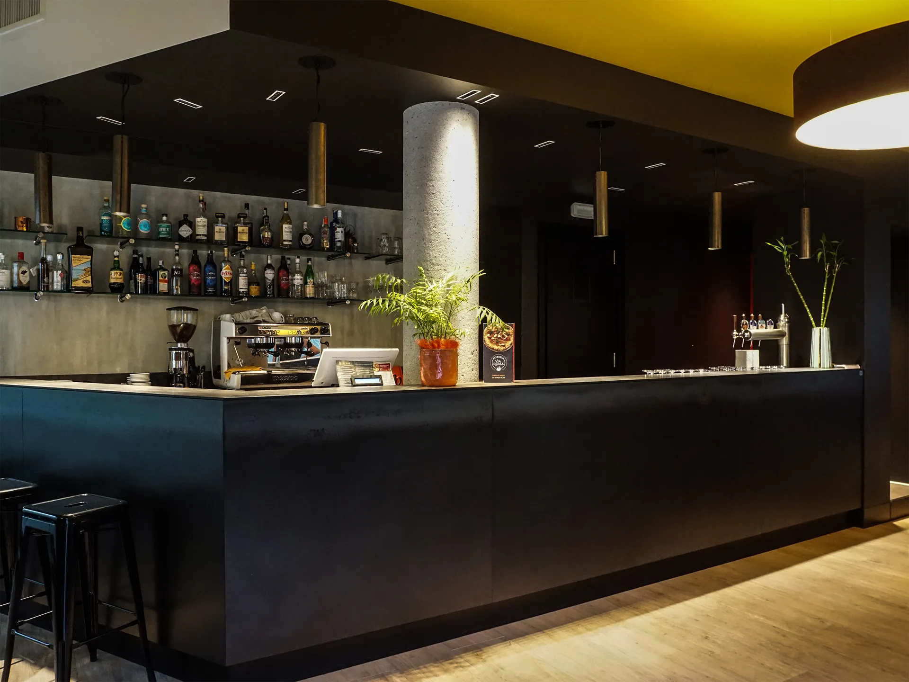
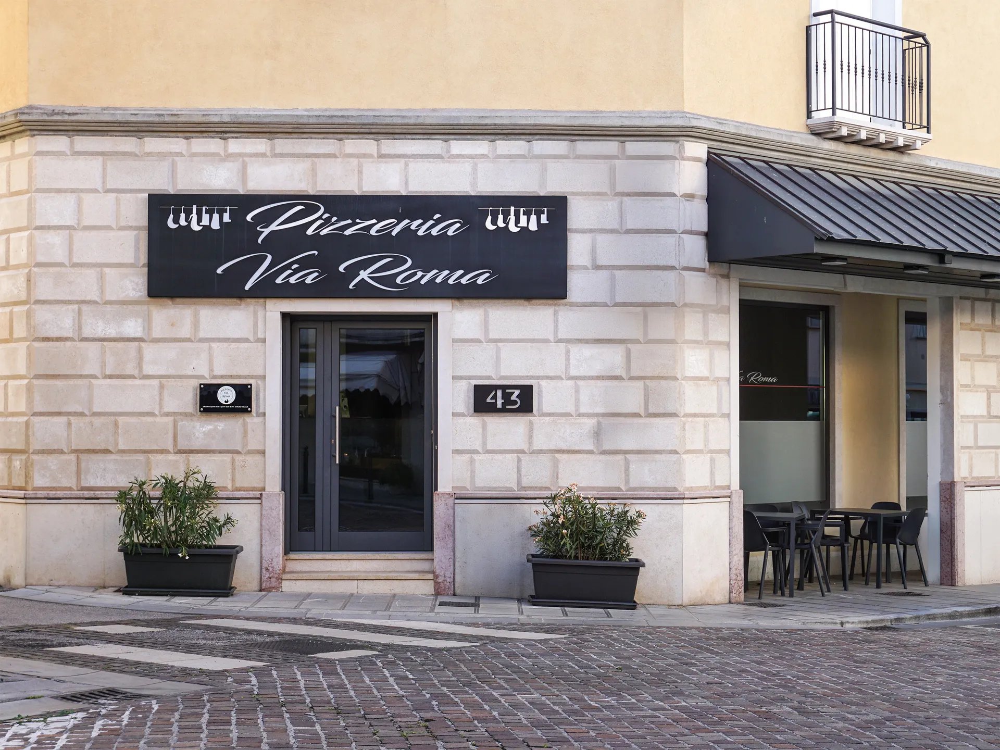
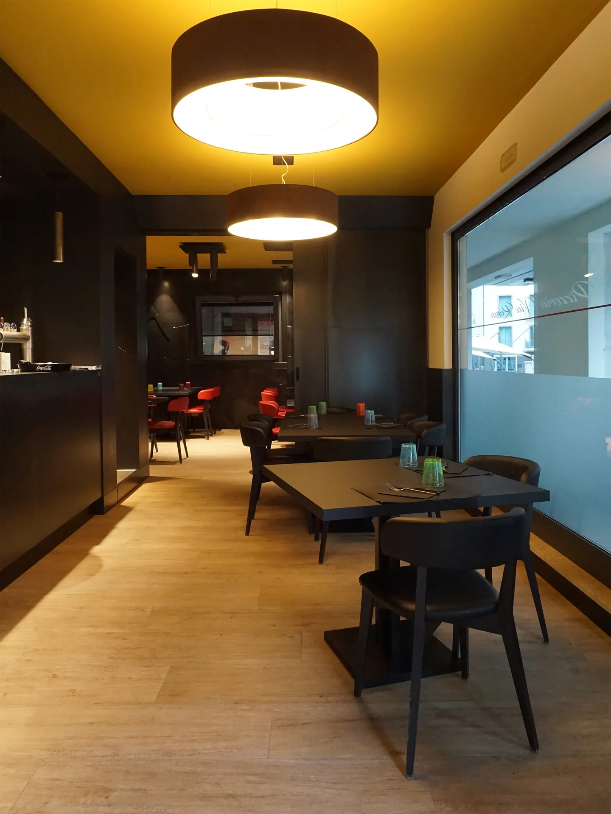
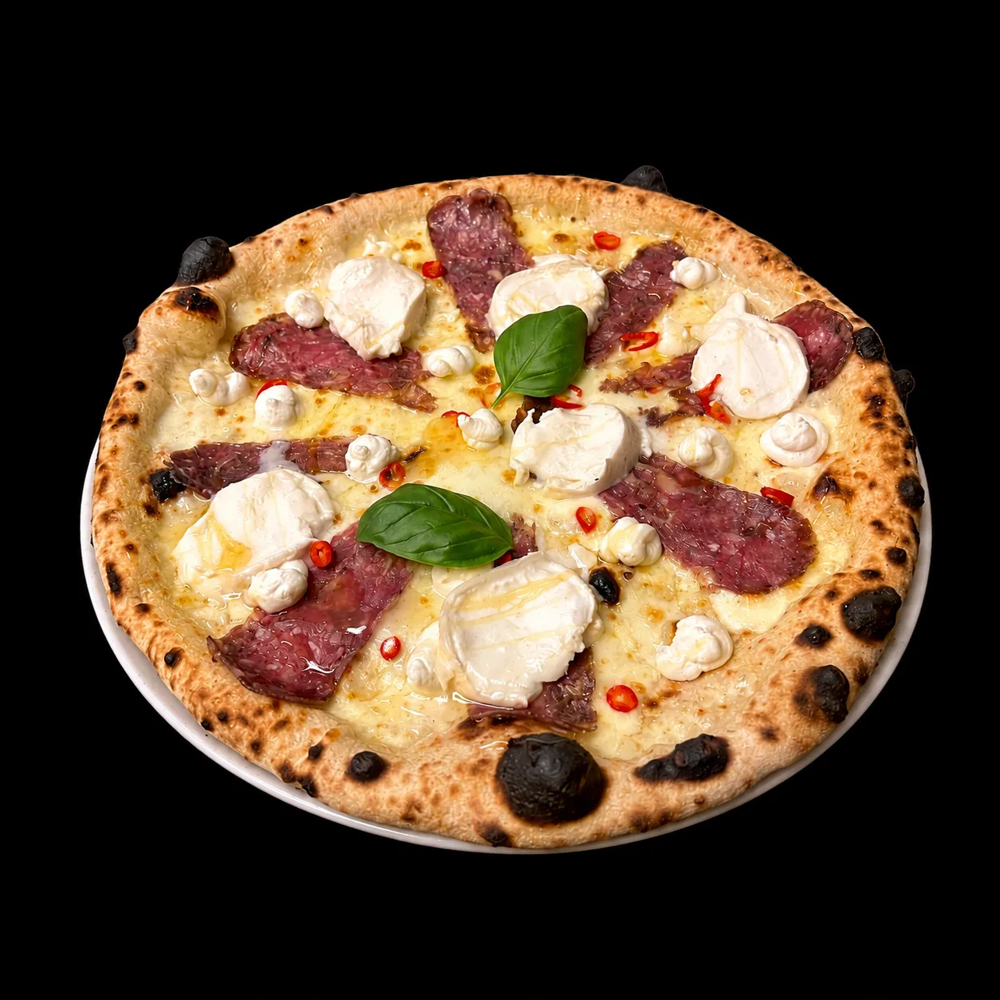
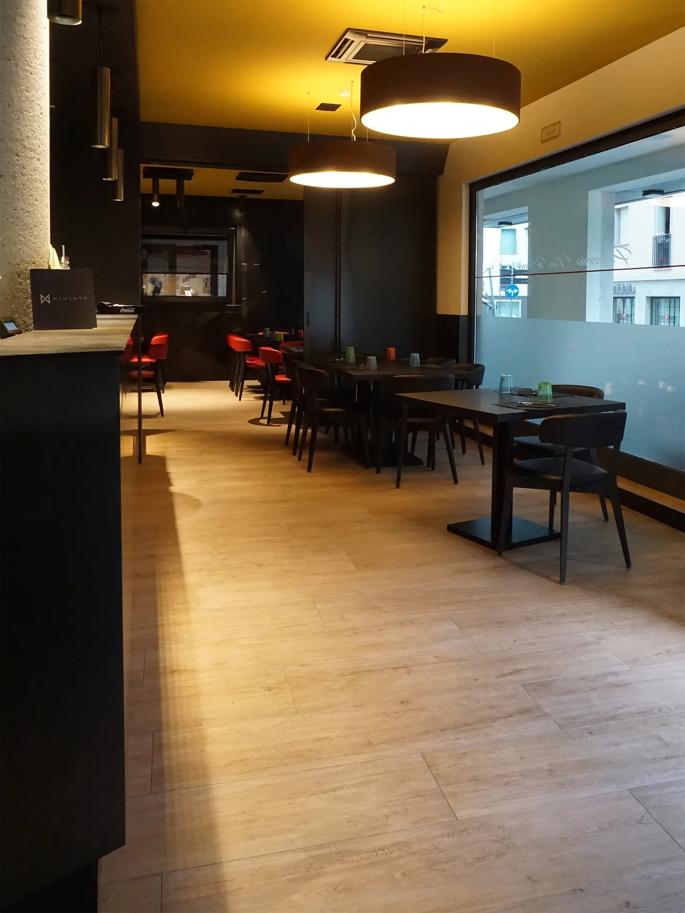

Maniago · Friuli


A due passi da Piazza Italia, nella città delle coltellerie, la Pizzeria Via Roma è il punto fermo delle sere di Maniago. La pietra, l'insegna, la porta aperta dalle 18:00, tutti i giorni.

Una sala disegnata per stare bene: toni scuri, dettagli in ottone, il soffitto color senape che scalda ogni tavolo. Il posto giusto per una cena lenta o una pizza veloce al bancone.

Frumenti italiani selezionati e coltivati in modo sostenibile, una filiera etica trasparente in ogni fase, dalla selezione del seme alla macinazione. Impasto a lunga lievitazione: leggero, digeribile, fragrante.
Dal nostro forno

Leonardo da Vinci
L'esperienza
Non solo la pizza: l'atmosfera, il forno, le mani e i gesti di ogni sera.
La community
Le vostre serate da Via Roma. Una selezione di scatti condivisi dai nostri clienti.
Inviaci la tua foto su WhatsApp: la pubblicheremo dopo la tua conferma.
© 2026 Pizzeria Via Roma · Memento Studio
Seguici
Social & Recensioni
Impasto leggero e digeribile, cornicione perfetto. La Burrata e Crudo è imperdibile.
Locale moderno e curato, personale gentile. Ottime anche le birre artigianali friulane.
La pizza di sempre, con un tocco in più, davvero. Torneremo di sicuro.